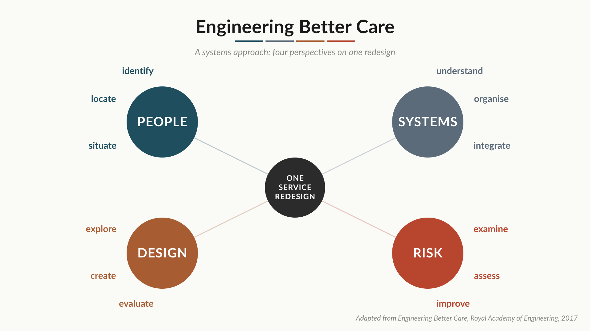

Seeing the Whole
Why a local improvement can be a system loss, and how a leader in the middle changes a system they cannot redesign.
A laboratory cuts its turnaround time for completing its daily work. The team is pleased, but the improvement was bought by batching specimens a different way, and the section upstream is now flooded at four o'clock every afternoon. The local performance improved. The system did not.
This is one of the most common and most demoralising experiences in improvement work, and it has a name. It is sub-optimisation, or point optimisation: improving one part of a system in a way that damages the whole. It is what happens when you change a process without seeing the system it belongs to.
The check on the companion piece
The companion piece to this one, Leading Lean from the Middle, argued that a leader without a mandate should expand their Circle of Influence by delivering value and earning credibility. This piece is the necessary check on that idea.
If you expand your influence by exporting your problems to the process next door, you have not delivered value. You have moved a cost out of your own sight. The win collapses, and your credibility collapses with it.
The companion piece describes credibility as a bank of goodwill: it fills only through small, regular deposits, and it can never be topped up with one grand gesture. A system-positive improvement is a deposit. A local win that exports its waste to a neighbour is the opposite, the single careless spend that drains the account in a fortnight, because the moment the neighbour notices, every claim you make afterwards is discounted. Presenting it as a success is also a quiet failure of integrity, which is why seeing the whole is in the end as much a matter of honesty as of technique. So seeing the whole is not an academic nicety. It is how you make sure the value you deliver is real enough to last, and therefore how you actually grow your circle rather than borrowing against it.
Seeing the whole without owning the whole
Here is the difficulty. Seeing the whole sounds like it requires authority over the whole, which is exactly what a leader in the middle does not have. You cannot redesign a patient pathway that crosses three organisations. You cannot rebuild the hospital. So what does "see the whole system" actually mean for someone who can only act on a part of it?
It means this. The systems view is a way of seeing, not a mandate to redesign everything. You use it to understand where your part connects to the rest, where a change of yours will land on someone else, which of your constraints are genuinely fixed and which you have only assumed are fixed, and who you need to bring with you before you act. You act locally. You think system-wide. The thinking is what keeps the acting honest.
A framework built for exactly this
There is a framework built for exactly this, and part of its value is that it comes from outside Lean. In 2017 the Royal Academy of Engineering, working with the Royal College of Physicians and the Academy of Medical Sciences, published Engineering Better Care, a systems approach to designing and improving health and care. It was led by Professor John Clarkson at the University of Cambridge. Its central idea is that improving a complex service well means looking at it through four complementary perspectives at the same time.
People — how individuals, teams and organisations actually interact, including the patients and carers, not the idealised versions in a policy document.
Systems — the fact that you are working inside a set of interconnected technical and human parts, where a change in one place produces effects in another, often after a delay and often out of your sight.
Design — the discipline of identifying the right problem first, generating several possible solutions, and refining them, rather than reaching for the first fix that comes to hand.
Risk — asking what could go wrong, what a change might break elsewhere, and how you would know if it did. A fifth perspective, management, is often added to cover the running of the improvement itself.

None of these four is a Lean tool, and that is the point. Engineering Better Care is the systems-thinking lens that sits underneath the Lean tools and stops them being used naively. It carries a quiet advantage for a leader in the middle, too. It is the work of three Royal bodies, and it speaks a language that boards, clinicians and regulators already respect. When you frame your improvement in its terms, you are speaking the establishment's own language back to it, which is useful when you are trying to expand your influence upward.
Most of the variation is the system
The systems view also changes how you read a problem. W. Edwards Deming spent a career making one point that most organisations still resist: the great majority of the variation you see in a process is built into the system, not caused by the individual people working inside it. If you treat ordinary, system-level variation as if it were a string of individual failures, you will spend your life chasing noise, blaming good people, and tampering with a process until it gets worse.
The skill is to tell the difference between common-cause variation, the ordinary background hum of a stable system, and a special cause, a genuine signal that something has changed. That distinction is a systems judgement before it is a statistical one.
It is also why problems are friends, not enemies. A problem is rarely evidence of a bad person. It is usually the system showing you where it is broken. The systems view is what lets you read it that way.
Where the tools come in
The tools at gembasuite.org are built to keep this discipline in front of you while you work, rather than in a textbook you read once and forget.
Gemba-VSM maps the whole flow rather than a single step, so the place where your change will land on a neighbour is visible before you make it.
Gemba-A3 carries a Systems Lens built directly on the Engineering Better Care perspectives: People, Systems, Design and Risk. It asks, in plain words, whether your goal improves the whole system or just one part of it, and whether you have checked for sub-optimisation. The question is built into the page, so it is hard to skip.
Gemba-SPC uses Donald Wheeler's process behaviour charts, which exist precisely to separate common-cause variation from real signals, so that you act on the system when it is the system, and on the event when it is genuinely an event.
The tools do not make the systems judgement for you. They put it where you cannot avoid it.
A word of caution
A word of caution about Engineering Better Care, because its strength is also its risk. It is a framework for designing systems, and its natural register is ambitious and whole-system. For a leader in the middle, that ambition can tip back into the redesign fantasy that the companion piece warned against, the belief that you ought to be re-architecting the whole enterprise. Resist that. Use the four perspectives to see clearly, then act on the part that is actually yours.
See the whole, act on your part, and never export your waste to a neighbour. That sentence is most of the discipline.
In short
Improvement that holds is improvement that was system-aware from the start. It is also, not by coincidence, the kind of improvement that fills the bank of goodwill rather than draining it, and so expands a leader's influence rather than borrowing against it.
Change what is yours to change. But look up first, and see the whole field before you till your corner of it.
Further reading
- Royal Academy of Engineering, Royal College of Physicians and Academy of Medical Sciences, Engineering Better Care: a systems approach to health and care design and continuous improvement (2017).
- W. Edwards Deming, Out of the Crisis (1986) — on system variation and the limits of blaming the individual.
- Donald J. Wheeler, Understanding Variation: the key to managing chaos — common-cause and special-cause variation in plain terms.
David Clark • gembasuite.org • June 2026
© 2024–2026 David Clark. Licensed under Creative Commons Attribution-NonCommercial-ShareAlike 4.0 International (CC BY-NC-SA 4.0). Free for all healthcare improvement purposes.